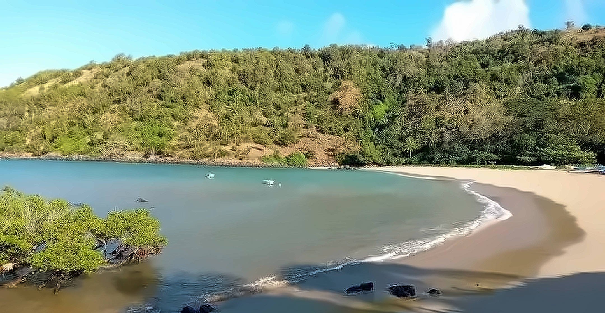

MoheliGoTRAVERSÉES MARITIMES
SERVICE RÉTABLI
OUROVENI · CHINDINI · HOANI · FOMBONI
OUROVENI · CHINDINI · HOANI · FOMBONI
AVIS AUX VOYAGEURS · LES DÉPARTS REPRENNENT
LA MER EST CALME.ON REPART.
Tu l’as su le jour où ça s’est arrêté.
Tu le sais le jour où ça repart.
RÉSERVE TA TRAVERSÉE
MVOLA OU KARTAPAY · +269 479 43 28moheligo.com